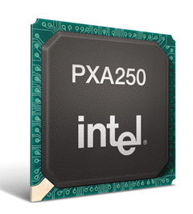

Андрей Борзенко
С 25 по 28 февраля в Сан-Франциско (Калифорния) состоялся Intel Developer Forum (IDF) - крупнейший международный конгресс разработчиков аппаратного и программного обеспечения, прошедший под лозунгом Advancing the Digital Universe ("Расширяя границы цифровой Вселенной"). В выставочном комплексе Moscone Center собрались ведущие специалисты в области компьютерной и коммуникационной техники, разработчики цифровых устройств и программных продуктов, менеджеры по информационным технологиям. Значительную часть гостей Форума составили руководители коммерческих предприятий и компаний, формирующих элиту мировой экономики, топ-менеджеры, отвечающие за продажи и маркетинговую стратегию, а также представители СМИ и аналитики.
Программа IDF, как всегда, была максимально насыщенной. Гостям были представлены ключевые доклады руководителей корпорации Intel и выступления именитых докладчиков из других компаний, десятки специализированных технических семинаров и множество демонстраций последних разработок.
В первый день Форума с ключевым докладом выступил главный исполнительный директор Intel Крейг Барретт (Craig R. Barrett) (рис. 1). Он представил взгляд корпорации на текущий этап эволюции компьютерных и коммуникационных технологий, а также коснулся планов дальнейшего совершенствования технологий Intel и расширения ее производственных возможностей.
| Рис. 1. Глава Intel Крейг Барретт.
|
В частности, он отметил, что рост мировой экономики все в большей степени определяется технологиями, а инвестиции в технологии и исследовательские работы - это ключ к процветанию и экономическому развитию. Несмотря на нынешний экономический спад, рост Интернета и тенденция к построению экономик, основанных на знании, останутся двигателями экономического роста во всем мире.
Среди приложений, стимулирующих дальнейший рост, Барретт назвал электронный бизнес, телекоммуникации, развлечения и доступ к информации. Однако остаются и проблемы, требующие решения; в частности, это безопасность онлайновых коммуникаций и беспроводной связи, медленные темпы внедрения широкополосного доступа, реализация преимуществ Web-услуг (основанных на стандартах электронного бизнеса).
По мнению главы Intel, в конкурентной борьбе с наибольшей вероятностью побеждают именно те компании, которые успешно используют технологии для стимулирования роста Интернета и устранения препятствий для этого роста. Другие области деятельности, где высокотехнологичная отрасль может создать условия для экономического роста и преодоления нынешнего спада, - это адаптация технологий к потребностям пользователей и тенденция к стандартизации в телекоммуникационной отрасли.
Кроме того, Барретт объявил, что Intel начала серийные поставки микропроцессоров, изготовленных на новом заводе по обработке 300-миллиметровых подложек в Орегоне. Сочетание 0,13-микронной технологии и 300-миллиметровых подложек позволяет корпорации увеличить количество процессоров в расчете на одну подложку почти вчетверо по сравнению с 0,18-микронной технологией на 200-миллиметровых подложках предыдущего поколения. Первой в отрасли перейдя на подложки большего размера и уменьшив размеры транзисторов и соединительных проводников, Intel сумела значительно снизить себестоимость и поднять производительность процессоров.
Серверные технологии
Intel Xeon
Среди новых видов продукции корпорации Intel, обсуждавшихся на Форуме, был представлен процессор Intel Xeon для серверов (рис. 2) и набор микросхем E7500 для двухпроцессорных систем. По данным IDC об объеме поставок одно- и двухпроцессорных серверов, в III квартале 2001 г. оборудование на базе архитектуры Intel составляло 92% всего количества серверов, обслуживающих пользователей информационных систем. По сравнению с ныне существующими серверными платформами Intel новые компоненты обеспечивают до 80% прироста производительности двухпроцессорных систем. Таким образом, по мнению представителей корпорации, процессоры семейства Intel Xeon с тактовой частотой 1,8, 2 и 2,2 ГГц становятся прочной основой двухпроцессорных серверов.
| Рис. 2. Микропроцессор Intel Xeon.
|
Резкое наращивание производительности двухпроцессорных серверов на базе процессоров семейства Intel Xeon обеспечивают такие технологические разработки, как микроархитектура Intel Netburst, производственный процесс с нормой 0,13 мкм, технология Hyper-Threading, повышенная (до 512 Кбайт) емкость кэш-памяти второго уровня и применение серверного набора микросхем E7500.
Чипсет E7500 поддерживает память типа DDR и удваивает пропускную способность памяти по сравнению с устаревшей памятью типа SDRAM. Он удачно дополняет системную шину Intel Xeon с частотой 400 МГц, пропускная способность которой составляет до 3,2 Гбайт/с.
Технология Hyper-Threading, впервые примененная в процессорах семейства Intel Xeon, позволяет ОС рассматривать один физический процессор как два логических, тем самым значительно сокращая время отклика сервера, ускоряя прохождение транзакций, обеспечивая рост производительности и сбалансированность нагрузки. Это достигается за счет того, что процессоры, оснащенные технологией Hyper-Threading, одновременно обрабатывают инструкции, поступающие двумя различными потоками.
Эксперты полагают, что уровень производительности двухпроцессорной платформы на базе процессоров Intel Xeon и набора микросхем Intel E7500 оптимален для вычислительных средств прикладного назначения. Ожидается, что ведущие изготовители оборудования, в том числе Compaq, Dell, Fujitsu Siemens, Hewlett-Packard, IBM и NEC, в ближайшие месяцы приступят к массовым поставкам платформ на базе новых процессоров.
Семейство Itanium
Ускоренными темпами продолжается разработка продукции на базе следующего процессора Intel семейства Itanium, известного под кодовым названием McKinley, выход которого запланирован на середину нынешнего года. Кристалл нового устройства занимает площадь около 464 мм2. McKinley содержит внушительную кэш-память: Intel ввела в его конструкцию кэш третьего уровня емкостью 3 Мбайт, кэш второго уровня емкостью 256 Кбайт и кэш первого уровня емкостью 32 Кбайт. Оригинальный Itanium имеет 4 Мбайт кэш-памяти третьего уровня (она расположена на отдельных микросхемах) и 96 Кбайт кэш-памяти второго уровня. В другие внутренние подсистемы McKinley также внесен ряд модификаций. Общее количество транзисторов в этом кристалле составляет 221 млн. Все эти дополнительные нововведения обеспечат McKinley значительное повышение производительности. Процессор будет работать с тактовой частотой 1 ГГц. Ожидается, что приложения будут выполняться в полтора-два раза быстрее, чем на современном Itanium.
На конференции был продемонстрирован построенный на базе процессора McKinley сервер IBM eServer, работающий совместно с системой на базе процессоров Intel Xeon и исполняющий СУБД IBM DB2 и инфраструктурное ПО IBM WebSphere.
Intel уже готовит следующие версии кристаллов. В 2003 г. корпорация планирует представить Madison, а также малопотребляющую и менее дорогую версию Itanium Deerfield. Madison по существу станет ужатой копией McKinley. Он будет производиться с учетом проектных норм 130 нм, а не 180 нм, как McKinley. Результатом станет значительное сокращение размеров кристалла. В 2004 г. Intel выпустит новый процессор - Montecito, а в 2005-2006 гг. - Chivano.
InfiniBand
Как известно, архитектура InfiniBand представляет собой технологию ввода-вывода, упрощающую и ускоряющую подключение серверов друг к другу, а также к таким взаимодействующим с ними системам, как удаленные накопители и сетевые устройства. Такие качества этой архитектуры, как простота подключения, минимальное время ожидания, расширенная пропускная способность, высокий уровень совместимости и взаимодействия, способствуют наращиванию производительности, повышению надежности и масштабируемости серверов. На форуме IDF прошло несколько презентаций, демонстрирующих основные свойства InfiniBand.
В ходе презентации объединенной инфраструктуры InfiniBand, подготовленной Intel совместно с 25 ведущими фирмами, участвующими в программе разработки InfiniBand, было продемонстрировано применение различных стандартных протоколов передачи данных между накопителями, сетевыми и кластерными устройствами через единую коммутирующую матрицу InfiniBand с подключением к сетям Ethernet и оптоволоконным каналам.
На другой презентации, проведенной на платформе McKinley, была впервые наглядно продемонстрирована линейная масштабируемость приложений при подключении через коммутирующую матрицу InfiniBand. Здесь были задействованы разработанные Intel экспериментальные образцы хост-адаптеров в кластерной конфигурации на основе архитектуры InfiniBand. Как было отмечено специалистами IBM, программный комплекс DB2 на базе архитектуры InfiniBand обеспечивает безболезненный переход информационного центра с одного-единственного на несколько тысяч серверов.
Еще одна презентация демонстрировала технологию упреждающего оповещения администратора о переключении информационных потоков с аварийного сервера в составе кластера на другой сервер с помощью управляющего ПО уровня предприятия CA Unicenter. Здесь был задействован серверный кластер баз данных под управлением Oracle9i RAC, обслуживавший ПО SAS WebHound и Enterprise Miner в процессе анализа, интерпретации и представления данных.
Наряду с гетерогенной коммутирующей матрицей InfiniBand в ходе презентации демонстрировались три оригинальных решения для хранения данных на основе архитектуры InfiniBand, способные обеспечить высокую производительность подключения накопителей.
Одновременно с этим Intel анонсировала поставки исполнительных программ тестирования устройств в составе своих комплектов для тестирования инфраструктуры InfiniBand для разработчиков. Данные программы ускоряют процесс тестирования устройств на совместимость со спецификациями архитектуры InfiniBand. Комплекты для тестирования прилагаются к наборам Intel для разработчиков продукции на основе архитектуры InfiniBand, поставка которых ведется начиная с февраля 2001 г.
Мобильные решения
В рамках Форума Intel объявила о новых технологиях, которые сделают общение пользователей с настольными компьютерами, мобильными ПК и беспроводными вычислительными устройствами намного проще, удобнее и эффективнее. В числе этих технологий были названы новый процессор Pentium 4-M для мобильных ПК и процессоры для беспроводных устройств, рассчитанные на работу в коммуникационных сетях поколения 2,5 и 3.
Вице-президент и генеральный менеджер подразделения Intel Mobile Platforms Group Ананд Чандрасехер (Anand Chandrasekher) анонсировал программу Mobility Enabling Program - возглавляемую корпорацией инициативу по объединению отрасли с целью утверждения единых принципов, которые лягут в основу нового поколения мобильных компьютеров. Он рассказал о технических преимуществах процессора Intel Pentium 4-M и показал его в действии, продемонстрировав воспроизведение видеоматериала с качеством цифрового кабельного телевидения при программном декодировании на обычном ноутбуке.
Основное отличие нового процессора для мобильных ПК от процессоров для стационарных систем - развитые средства управления энергопотреблением, продлевающие время работы компьютера от батарей. Среди них технология Enhanced SpeedStep, обеспечивающая автоматическое переключение между режимом максимальной производительности и режимом экономии энергии в зависимости от интенсивности загрузки процессора; режим ожидания Deeper Sleep, в котором процессор работает при напряжении всего 1 В, а потребляемая мощность падает до 0,2 Вт и ниже (при этом данные приложений сохраняются); а также усовершенствованная технология Intel Mobile Voltage Positioning (IMVP). IMVP III - это технология регулирования напряжения, динамически изменяющая напряжение питания процессора в зависимости от его загрузки, что снижает расчетную интенсивность тепловыделения. Сочетание этих технологий позволяет уменьшить среднее энергопотребление процессора до значения менее 2 Вт и продлить время работы мобильного ПК от батарей.
Banias - таково кодовое название архитектуры следующего поколения процессоров Intel для мобильных ПК - будет включать ряд новаторских разработок, созданных специально для мобильной вычислительной техники. Продукция с архитектурой Banias появится в продаже в первой половине 2003 г.; в ее основу лягут микросхемы принципиально нового устройства. Чандрасехер продемонстрировал рабочий образец созданного для мобильного рынка набора микросхем под кодовым названием Odem, который будет представлен вместе с процессором на базе архитектуры Banias.
| Рис. 3. Концептуальный мобильный ПК.
|
Беспроводные технологии
В основе беспроводной продукции Intel лежат три стержневые технологии: микроархитектура XScale для обработки приложений, архитектура Intel Micro Signal Architecture для обработки сигналов и флэш-память для беспроводных устройств Intel Wireless Flash Memory. Они оптимизированы с тем, чтобы обеспечить более высокую производительность и низкое энергопотребление именно в беспроводных устройствах. Эти технологии - ключевые составляющие архитектуры Intel PCA (Personal Internet Client Architecture), технического проекта Intel, нацеленного на создание беспроводной портативной коммуникационной продукции, объединяющей возможности речевого общения и доступа в Интернет.
В будущей беспроводной технологии от Intel коммуникационные функции, вычислительная мощь и развитые возможности памяти будут объединены в единую технологию "беспроводной Интернет на одной микросхеме" (Wireless Internet on a Chip) - основу коммуникационных процессоров корпорации для GSM/GPRS (поколение 2,5) и WCDMA (поколение 3), которые в настоящее время находятся в стадии разработки. Коммуникационные процессоры Intel для сетей третьего поколения сейчас тестируются в лабораториях, а процессоры для коммуникационных сетей поколения 2,5 на основе технологии Wireless Internet on a Chip появятся уже в этом году.
На Форуме были представлены аппаратное обеспечение и наборы для разработчиков, предназначенные для создания устройств и приложений, оптимизированных под архитектуру Intel PCA. В набор ПО входит полный пакет инструментов для IBM WebSphere Everyplace Embedded Software, оптимизированных под Intel PCA. Сеть разработчиков Intel PCA Developer Network предлагает компаниям - поставщикам беспроводного оборудования услуги разработки, а также технической и маркетинговой поддержки при создании сотовых телефонов, персональных цифровых помощников и других мобильных устройств и приложений, поддерживающих Intel PCA. На данный момент уже более 600 компаний присоединились к этой сети и пользуются доступом более чем к 400 инструментам для разработки ПО и аппаратного обеспечения.
Как известно, Intel и Microsoft выразили готовность приступить к поставкам эталонных проектных решений, ориентированных на ускоренную разработку беспроводных прикладных и сервисных средств следующего поколения для потребительского и корпоративного рынка с применением программных платформ Microsoft Windows Powered Pocket PC и Smartphone 2002, а также технологии Intel PCA. В ходе Форума представители этих корпораций подробно осветили вопросы сотрудничества в ходе оптимизации Microsoft Windows CE .NET под процессоры для обработки приложений Intel PXA250 (рис. 4) и PXA210 на базе микроархитектуры XScale.
|  | Рис. 4. Процессор PXA250 на базе микроархитектуры XScale
|
ПО Windows CE .NET включает в себя оптимизированный компилятор, ядро и пакет поддержки системных плат с процессорами для обработки приложений PXA250 и PXA210, а также систему разработки DBPXA250 с поддержкой технологии Intel PCA, предназначенную для проектирования сверхпортативных беспроводных коммуникационных устройств, объединяющих возможности голосовой связи и доступа в Интернет. Intel займется распространением средств программирования под Windows CE .NET в составе системы разработки DBPXA250, интегрированных высокопроизводительных базисных элементов (Intel Integrated Performance Primitives, Intel IPP) и средств разработки, поддерживающих такие беспроводные технологии, как GSM/GPRS, 802.11 и Bluetooth. К примеру, применение базисных элементов Intel IPP способствует более быстрому оснащению устройств технологией Windows Media, которая обеспечивает рост скорости отображения видеокадров, улучшенное качество воспроизведения звука и расширенные возможности применения графических эффектов.
К разработке устройств на базе процессора PXA250 под управлением ПО Windows CE .NET приступили такие компании, как Cyberbank Corporation, Hitachi, Impactra Company, Intermec Technologies Corporation, Samsung Electronics и Symbol Technologies. Поставки этих устройств начнутся в ближайшие месяцы.
Сети и телекоммуникации
"Коммуникационная индустрия должна отказаться от дорогого "принципа эксклюзивности" в создании оборудования и начать применять модульный принцип, основанный на использовании соответствующих отраслевым стандартам системных компонентов", - отметил на Форуме Шон Мэлони (Sean Maloney), исполнительный вице-президент и генеральный директор подразделения Intel Communications Group. Чтобы ускорить процесс перехода к модульному принципу проектирования оборудования, Intel анонсировала ряд высокопроизводительных и обладающих низким энергопотреблением процессоров для сетевого оборудования и запоминающих устройств на основе технологии Intel XScale, а также интегрированных гигабитных контроллеров стандарта Ethernet, снижающих себестоимость соединений между ПК и серверами.
В новых процессорах реализованы преимущества высокой производительности и низкого энергопотребления процессорного ядра Intel Xscale, что обеспечивает большую вычислительную мощность устройствам, излучающим очень мало тепла. Это требование становится все более жестким по мере того, как сетевые и запоминающие устройства уменьшаются в размерах и устанавливаются во все более тесных средах. Кроме того, общая черта новой продукции - гибкость программного кода, что позволит разработчикам добавлять собственные функции.
Новые сетевые процессоры - это часть реализации Intel Internet Exchange Architecture, технического проекта структурных компонентов, формирующих основу коммуникационного оборудования нового поколения. Использование этих процессоров позволит развернуть широкий спектр современных коммуникационных служб, включая средства защиты, шифрования и управления трафиком, - и все это на устойчивой скорости до 10 Гбит/с. Сетевые процессоры представляют собой программируемые микросхемы, объединяющие в себе функции, которые необходимы для передачи пакетов данных по сети. Они составляют основу широкого спектра коммуникационного оборудования.
В состав нового семейства входят сетевой процессор IXP2800 для основных сетевых приложений (например, для использования в сверхскоростных коммутаторах/маршрутизаторах); сетевой процессор IXP2400 для многофункциональных коммутаторов и подобного оборудования, устанавливаемого в "опорных точках" сети; и сетевой процессор IXP425 для оборудования, с помощью которого осуществляется подключение по цифровым абонентским линиям (DSL), через кабельные модемы к Интернету, а также к беспроводным локальным сетям. Полностью программируемые сетевые процессоры IXP2800 и IXP2400 работают на скоростях 10 и 2,5 Гбит/с соответственно. В них реализовано технологическое достижение под названием Hyper Task Chaining, позволяющее этим процессорам одновременно выполнять множество операций, что обеспечивает весьма высокую производительность сети и постоянную достаточность ее пропускной способности для одновременной работы множества комплексных служб.
Процессор ввода-вывода IOP321, работающий на частоте 400 или 600 МГц, оптимизирован под высокопроизводительные, экономически эффективные устройства хранения данных. Пониженное энергопотребление избавляет от необходимости устанавливать теплоотводящий радиатор, а конструкция на базе одной микросхемы позволит проектировщикам сэкономить место на системных платах.
В поддержку представленных Intel новых процессоров более 30 компаний, среди которых есть и участники программы Intel Internet Exchange Architecture Developer Network, объявили о своих планах выпуска компонентов, программных продуктов и средств разработки, которые помогут им более эффективно создавать новую продукцию на базе новых процессоров. Эту инициативу поддерживает Intel Communications Fund - фонд долевых стратегических инвестиций, в распоряжении которого находится 500 млн долл. и в котором участвуют более 40 различных компаний.
По данным аналитической компании Dell'Oro Group, объем рынка решений для подключения к сетям стандарта Gigabit Ethernet за IV квартал 2001 г. увеличился на 30%. За тот же период корпорация Intel укрепила свои позиции мирового лидера в сфере сетевых решений, заняв 60% этого рынка. На Форуме Intel представила три новых продукта стандарта Gigabit Ethernet на одной микросхеме - для настольных ПК, рабочих станций и серверов. В числе новых контроллеров были представлены Intel 82546EB - двухпортовый контроллер на одной микросхеме для серверов и Intel 82545EM - однопортовый контроллер на одной микросхеме для рабочих станций. Оба контроллера поддерживают интерфейс шины PCI-X, что обеспечивает более эффективную работу в сети, а также спецификации Alerting Standard Format 1.0 и SMBus 2.0. Оба контроллера поставляются в комплекте с ПО Intel Advanced Network Services, которое помогает увеличить время непрерывной работы серверов и устранить узкие места серверной части сети. Контроллер стандарта Gigabit Ethernet на одной микросхеме 82540EM для сетей на основе медного кабеля на 45% меньше предыдущих контроллеров Gigabit Ethernet. Он оптимизирован для настольных ПК.
Подробную информацию о форуме IDF и новых технологических разработках корпорации Intel можно найти по адресу: http://developer.intel.com.